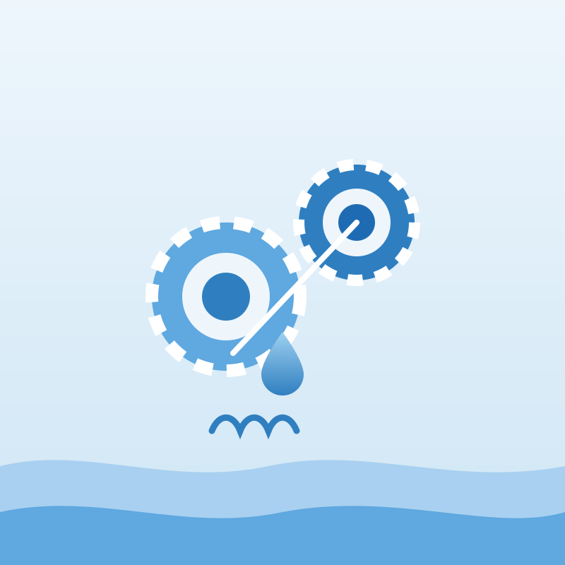

WP1 — Project management coordination
Faculty of Sciences of Tunis, University of Tunis El Manar (FST-UTM)
- To implement project infrastructure for efficient reporting and internal communication.
- To administer and transfer payments between the partners and the funding authority.
- To consolidate and submit periodic progress reports and the final report, including financial reports (Project Management Plan, midterm management report and final project report).
- To address all financial, ethical, legal, intellectual property and administrative matters related to the consortium, and to manage gender equality in line with PRIMA procedures.